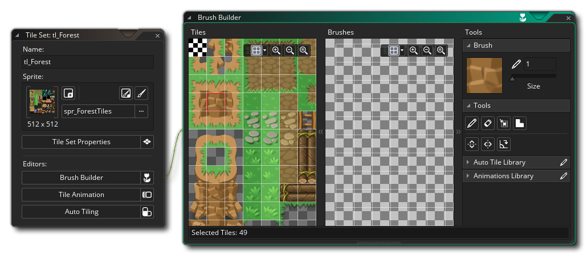

默认情况下，当你在tiles 编辑器中把room "画 "到瓷砖地图层上时，你选择一个tile ，然后用它来画。然而，tile sets ，几乎总是被设计成有一些部分
以不同的方式组合在一起，形成整个区域或项目。例如，一个RPGtile set 可能有景观特征tiles ，可以连接起来形成更大或更小的特征--如树木和建筑--取决于瓷砖的数量。
瓷砖的数量而定。现在，在一个room 图层上放置这样的多个特征，需要你来回多次改变tile ，这对你的工作流程是不利的。为了解决这个问题，GameMaker让你可以在tile 编辑器中创建刷子 。
Tile Set 编辑器中，当你点击 上的画笔生成器按钮时就可以使用。
在画笔生成器中，左边是原始的tile set ，右边是一个空白的 "画布"。你现在可以选择
左边的任何tile ，然后把它画在右边，以创建自定义的 "画笔"，然后你可以在room 编辑器中使用。请注意，你可以点击并按住鼠标左键
，然后在tile set ，选择多个tiles ，将其画在画布上，你也可以按住
/
+
，添加特定的单个tiles ，或按住
+
，删除特定的tiles 。
下图显示了我们之前提到的景观特征，作为一个例子，三个定制的刷子是由一个瓷砖组制作的。
在右边，你可以看到我们所做的三个功能（在图片中用一个橙色的方框突出显示
突出显示）。注意我们在每个特征之间留了一个tile ，这是因为在tiles 编辑器中，任何接触的room 组都将被视为一个笔刷，所以我们留了一个tile ，以表明每一组都是我们要创建的一个不同的
我们要创建的笔刷。在创建画笔的同时，你可以用鼠标左键
，用鼠标右键
删除。你还可以用
/
和鼠标滚轮来缩放
，当鼠标在其中一个窗口上时，你可以缩放tile 表或画布。
在其中一个窗口上，或者你可以用
+
或鼠标中键 ，然后拖动鼠标，在周围移动。
鼠标中键
并拖动。请注意，你也可以使用编辑器窗口中的工具箱中的缩放工具来改变
改变任何一个窗口的缩放级别，以及切换网格的可见性和颜色。
在右上方，你可以看到当前选择的工具，你也可以设置你想用的画笔的大小。默认的大小是1，也就是一个tile ，但是如果你把它设置成更高的值，那么你就可以用一个更大的笔刷来画画（和擦除），这个笔刷是由选定的 。 较大的画笔组成，重复选择tile ，如下面的图片所示。
在Tile Set 编辑器中，你可以选择用于许多不同任务的工具，其中一些将取决于你的自动瓦片库中是否有定义。
你是否在你的自动瓦片库中定义了什么。下面给出了每个工具的简要概述（注意，当你在tile 编辑器中选择了一个Room 层，那么这个工具箱就会显示在房间的顶部
workspace 和其他绘图工具）。
| 铅笔 | 这就是铅笔工具。它使用选定的tile ，在画笔窗口中用鼠标左键 |
|
 |
橡皮擦 | 使用橡皮擦工具，你可以使用鼠标左键 |
| 选择 | 这是选择工具，可以用来定义画笔窗口中的一个区域进行操作。你可以点击鼠标左键 |
|
| 瓷砖 | 点击这个工具可以启用自动平铺的绘画风格。当这个功能被激活时，你可以从Autotile Libraries标签中选择任何tile ，然后在Brushes窗口中绘制它，GameMaker会自动改变它 以匹配周围的tiles ，只要你正确地设置了AutoTile 标签。请注意，从tile ，选择一个不属于自动图库的tile set ，将重置绘图工具为标准的 铅笔工具。 | |
| 翻转 | 用鼠标左键点击翻转工具 |
|
| 镜子 | 用鼠标左键点击镜像工具 |
|
| 旋转 | 用鼠标左键点击旋转工具 |
在工具下面，你可以找到两个不同的部分，用于选择任何 自动贴砖或使用当前tile set 图像创建的动画 瓦片。 一个用于sprite 的单一tile set ，可以有很多很多的单格图像，这些图像可以在动画或自动瓷砖编辑器中组合起来，创建自定义的刷子，这些刷子将显示在这些部分，可以与 常规的静态tiles 来创建刷子（注意，无论你是从库中还是从基础tile ，一个动画tile set ，都会产生动画）。
一旦你设置了所有你需要的画笔，你就可以用它们在房间编辑器内的任何tiles 地图层上涂抹tile 。